HAL, a quadruped with an actuated spine
The goal for HAL is simple: a quadruped similar to Solo 8, the open-source robot from the Open Dynamic Robot Initiative, that can do a backflip, or even a double backflip. The big change from Solo is an articulated spine. HAL’s body is two halves joined by a QDD100 actuator, and each half carries two legs. Each leg has two joints, driven through belts from motors on the body, so there are eight LA8308 motors in all.
Why a spine
My reasoning starts with a figure skater. Once the robot leaves the ground, nothing can change its angular momentum about its centre of mass, because gravity acts at that point. So in flight
\[ L = I(t)\,\omega(t) = \text{constant}, \]and the robot turns through
\[ \Delta\theta = \int_0^{T} \frac{L}{I(t)}\,dt, \qquad T = \frac{2v_z}{g}, \]where \(T\) is the flight time for a takeoff speed \(v_z\). A rigid robot turns through \(LT/I\). A skater who pulls their arms in lowers \(I\) and spins faster, and opens up again to slow down for the landing. A spine gives the robot a way to do the same: fold to spin faster in the middle of the flip, then straighten out before the feet come down.
A flip of \(n\) full turns needs \(\Delta\theta = 2\pi n\). For a rigid body that means a takeoff angular momentum of
\[ L = \frac{2\pi n\, I}{T}. \]For example, a jump that peaks 0.5 m above takeoff gives \(v_z = \sqrt{2gh} = 3.1\) m/s and \(T = 0.64\) s. A double flip (\(n = 2\)) then needs an average pitch rate of about 20 rad/s for the whole flight.
How much the spine helps depends on how much mass it can move. In HAL’s MuJoCo model, where for now only the motors have mass (3.3 kg in all), the pitch inertia about the centre of mass is 0.047 kg·m² with the spine straight and 0.044 kg·m² with it at its 0.6 rad stop. That’s about 7%, because the motors sit close to the spine axis. The real robot’s legs and pulleys will change that number.
The spine also lets the robot turn without any angular momentum at all. If it flexes in the air, the two halves rotate in opposite directions so that the total stays zero. In the same model, flexing from straight to the 0.6 rad stop pitches the rear half back by 0.30 rad (17°) and the front half forward by the same amount. That’s a way to trim the landing angle after the flip is already committed.
On the real robot, the spine can make HAL jump:
The first build
I start with mostly 3D-printed parts (carbon-fibre nylon) on an aluminum chassis that I mill on a Tormach.

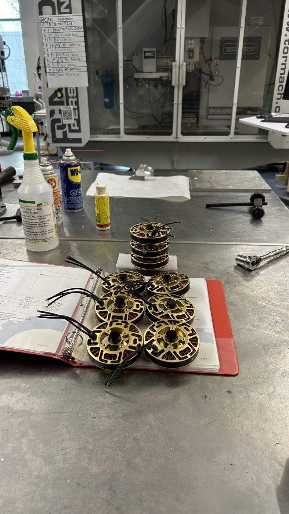

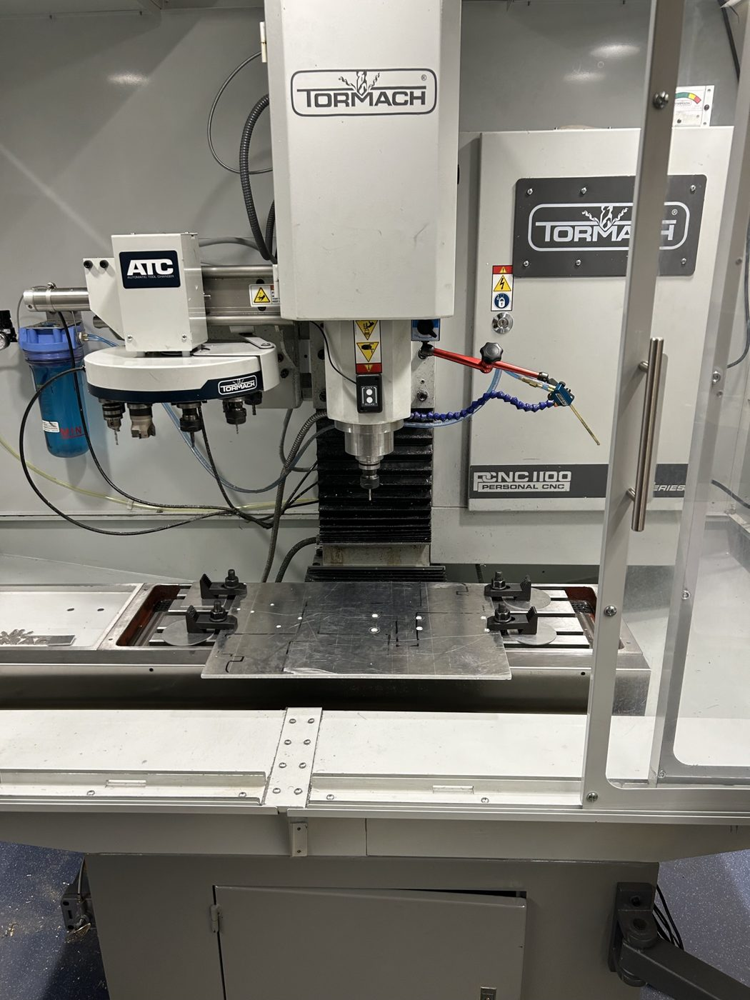


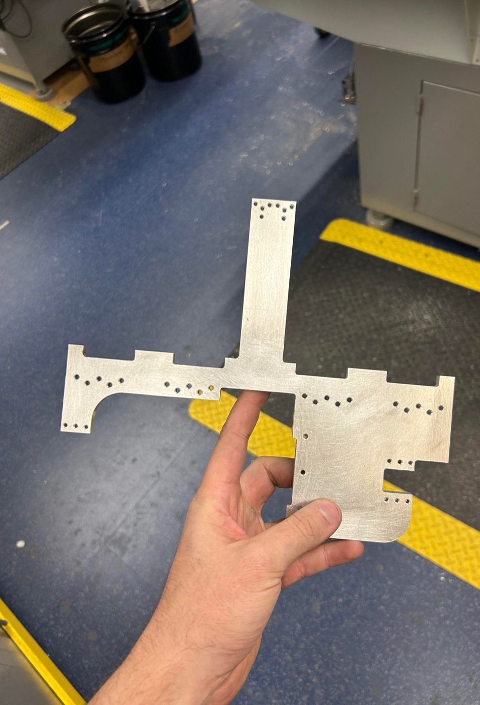

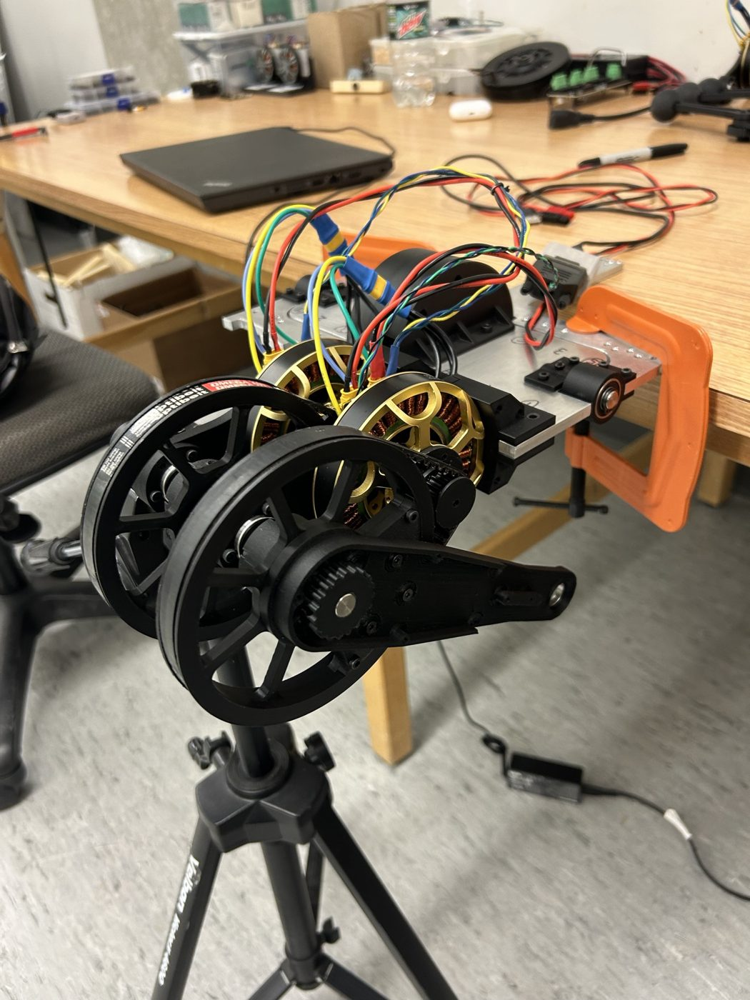

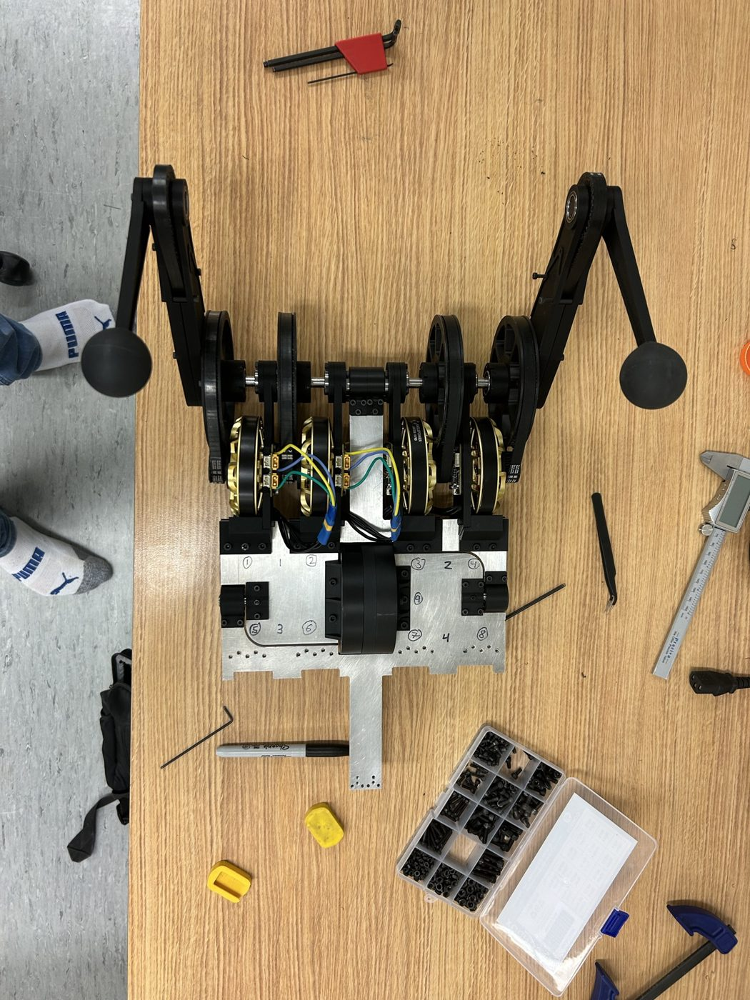

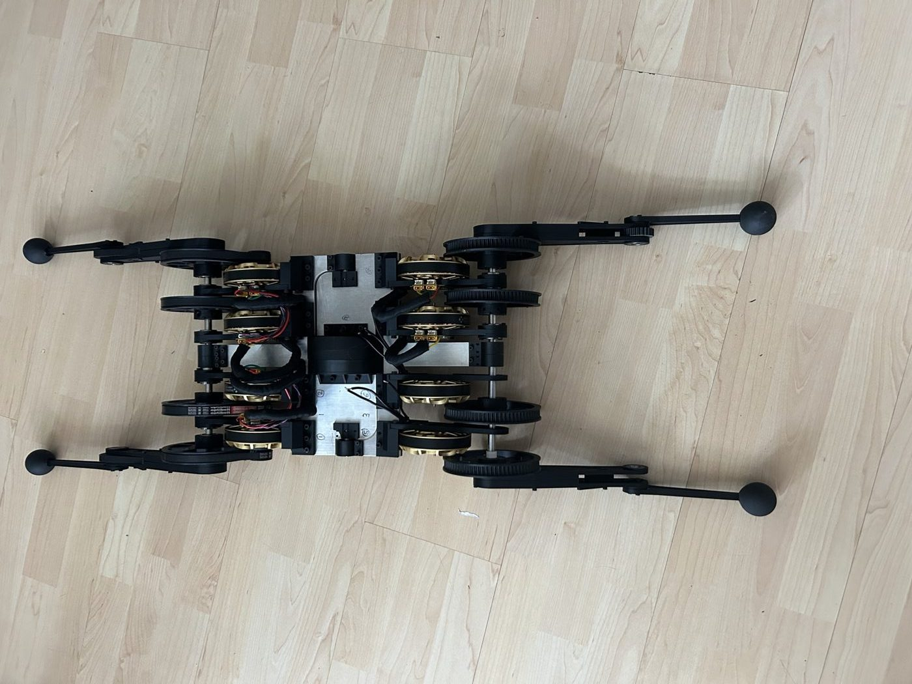
Milling the pulleys
Each leg joint is driven through a small pulley on the motor and a big pulley on the joint, eight of each, plus eight top knee pulleys. The first ones are printed. Over the summer of 2024 I mill all of them in aluminum.

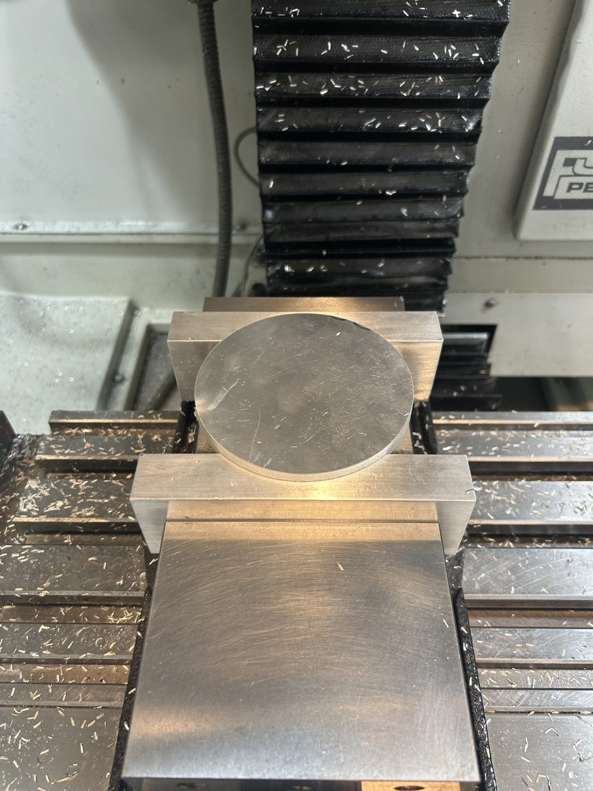

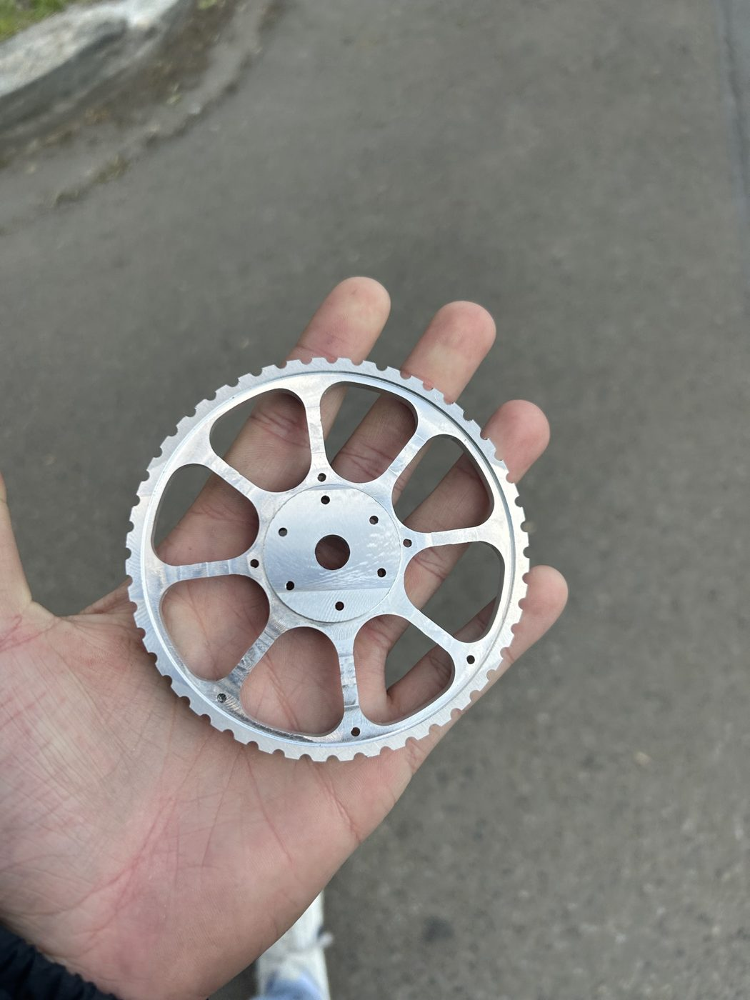

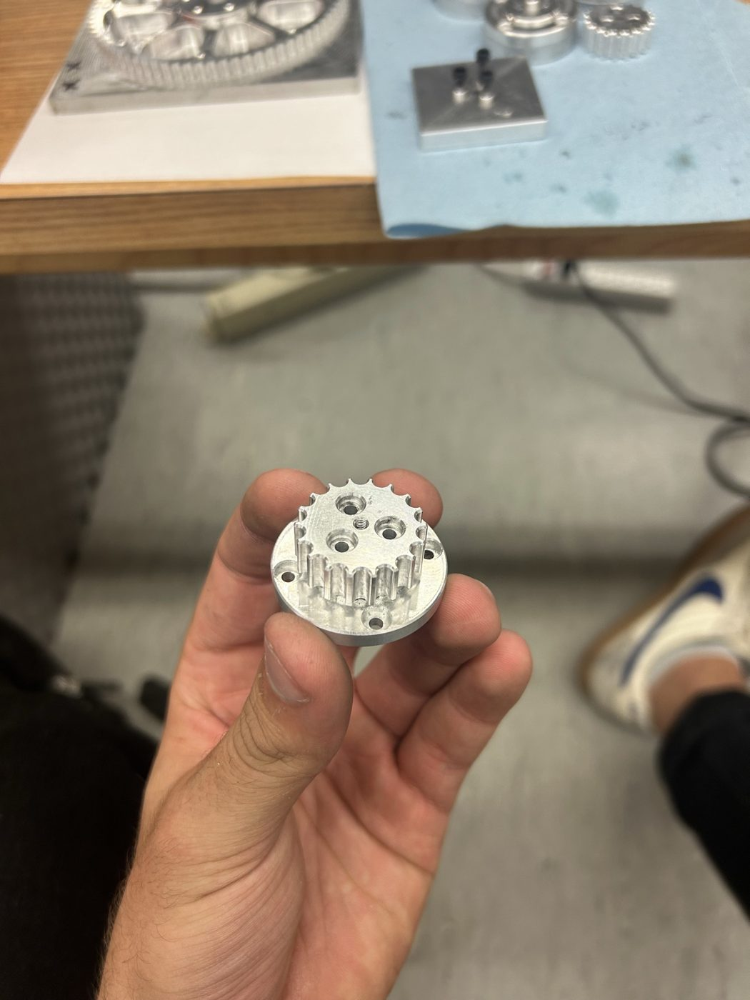

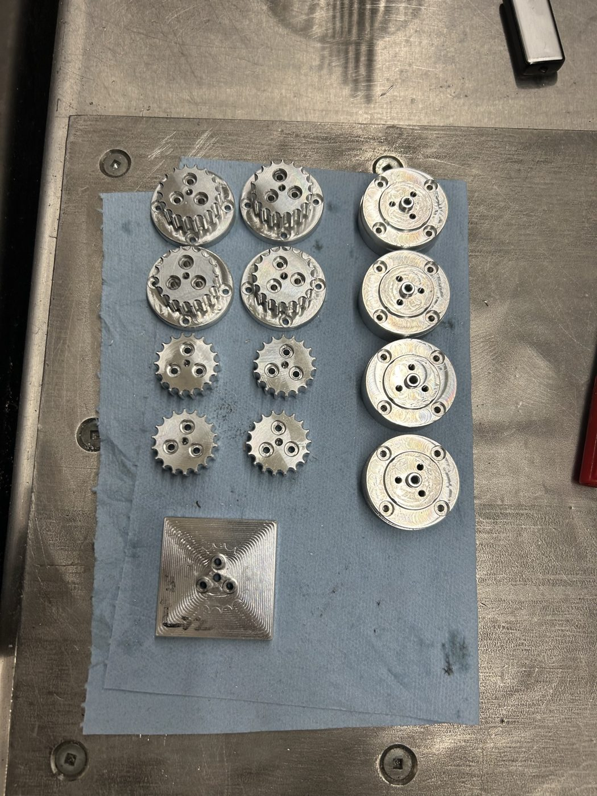

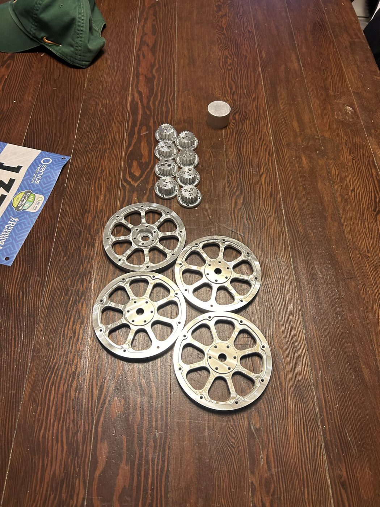

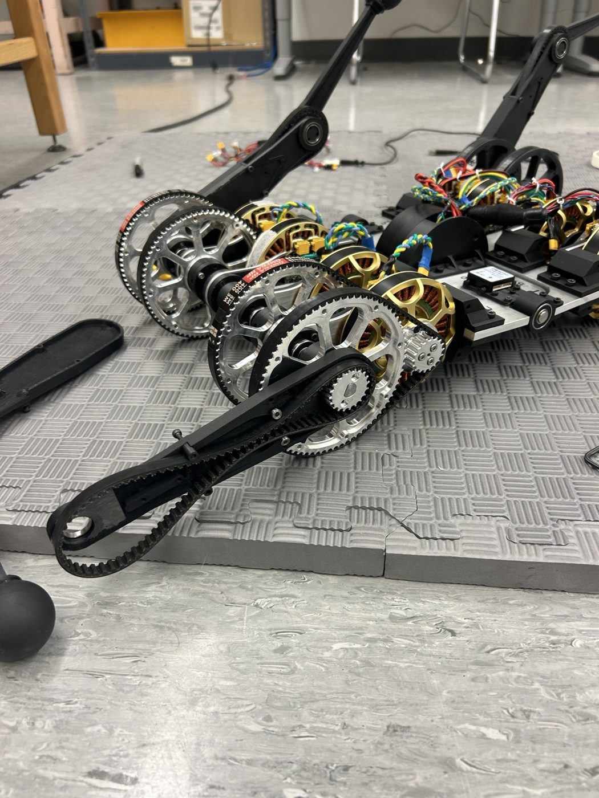
HAL Gym
To train it to flip, I’ve written HAL Gym, a set of MuJoCo environments for jumping, flipping, walking and running. Vincent Zhang has since tidied it into an installable Gymnasium package.
More recently I’ve rebuilt the full 3D model from the CAD for MuJoCo MJX, with motor models that limit torque by current and back-EMF. On top of it I’ve set up a backflip task that trains with Brax PPO on thousands of simulated robots in parallel, with domain randomization. The training isn’t finished yet.
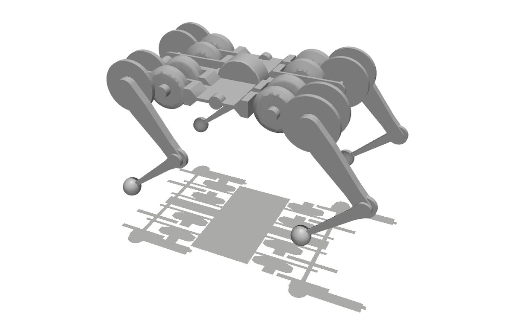
Questions or comments? Email me at justin@justinvalentine.ca.
Comments